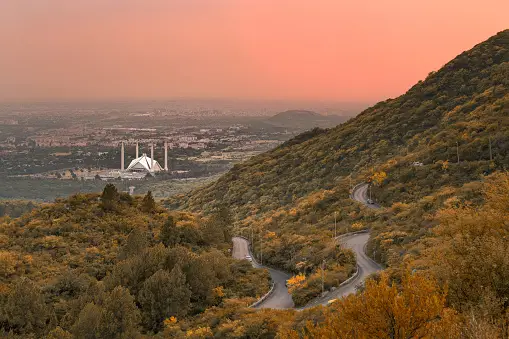
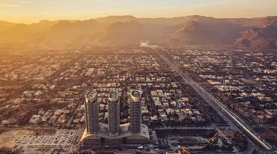
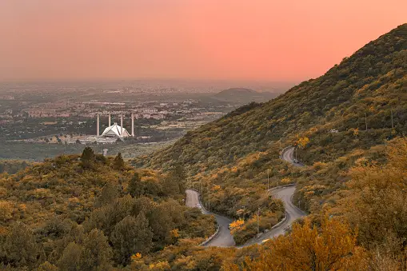
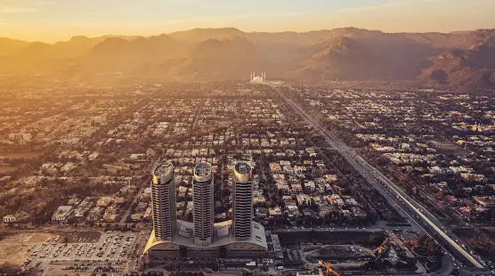

Welcome to Pakistani Mountain Tours
Explore the beautiful landscapes of Pakistan this autumn season.
Day 1: Islamabad Arrival
Arrival and Briefing: You will fly to Islamabad in the evening and arrive around 10 PM. After arrival, you will be transferred to the hotel.
Stay overnight at the hotel.
 



Day 2: Islamabad-Gilgit-Hunza
Leave in the morning for the airport to catch a 1-hour scenic flight over the heart of the Hindu Kush, Himalaya, and Karakoram mountain ranges to the north of Gilgit.
- Near Gilgit Join Famous KKH(Karakoram Highway)
- Old Silk Road
- Rakaposhi viewpoint (7,788 meters)
- Baltit Fort (Founded in the 8th Century CE), it has been on the UNESCO World Heritage
- Evening Sun Set view at Duiker Valley Hunza


Day 3: Hunza Gojal
- Morning Sun Rise View at Duiker Valley Hunza
- Altit Fort (ancient fort in the altit town in the hunza valley) UNNESCO Heritage
- Attabad Lake
- Lunch 12:00 pm Glacier breeza cafe(Hunza apricot cake)
- Passu Glacier and Batura Glacier
- Borith lack
- Hussani Suspension Bridge
- Evening sun set view passu Cone 6,106 meters


Day 4: Gojal-Khunjarab Pass-Hunza
Departure for pakistan-china Boarder(khunjerab pass)4700m
- Khunjrab national park
- wild animal (Ibex,Markhor,Snow leopard and Marmot)
- Pak-China Boarder 4700 meters
- lunch 1:00pm at Sost
- Sightseeing Hussaini Valley, Sost Valley
- Evening at Attabad Lack Hunza


Day 5:Hunza Nagar-Gilgit
- Hoper Nagar Valley
- Hoper Glacier
- Lunch 12:00 on the way to Gilgit
- Visit the Ancient Kargha Buddha lies Near Gilgit, Dated Back to 5th Century AD.
- Evening shopping Local market


Day 6:Naltar - Gilgit
Naltar Valley, nestled amidst Gilgit's majestic mountains, enchants with lush greenery and vibrant meadows.
- Explore Naltar Lake's turquoise waters and the diverse wildlife of Naltar Wildlife Sanctuary.
- Naltar Valley, a paradise nestled amidst Gilgit's majestic mountains, offers captivating landscapes
- Enjoy a refreshing lunch break amidst Naltar Valley's serene landscapes, followed by exploration of its natural wonders
- lunch 12:00pm.


Day 7:Gilgit - Islamabad
1 hour flight from gilgit to islambad,we will onward Taxila(Buddhist Side)
- Taxila Museum
- Dharmarajika stupa and Monastery
- lunch 12:00 pm at Taxila
- Jaulian Buddhist stupa and Monastery
- sirkap Remains
- Evening visit to Monal Restaurant and Dinner


Day 8: Islamabad Departure
The last day in Islambad for shopping and explor city, evening time shift to airport and fly return
- Faysal Mosque Islambad
- Pakistan Monument Islamabad
- Lunch 12:00 pm and shoppping Islambad
- After Dinner Departure